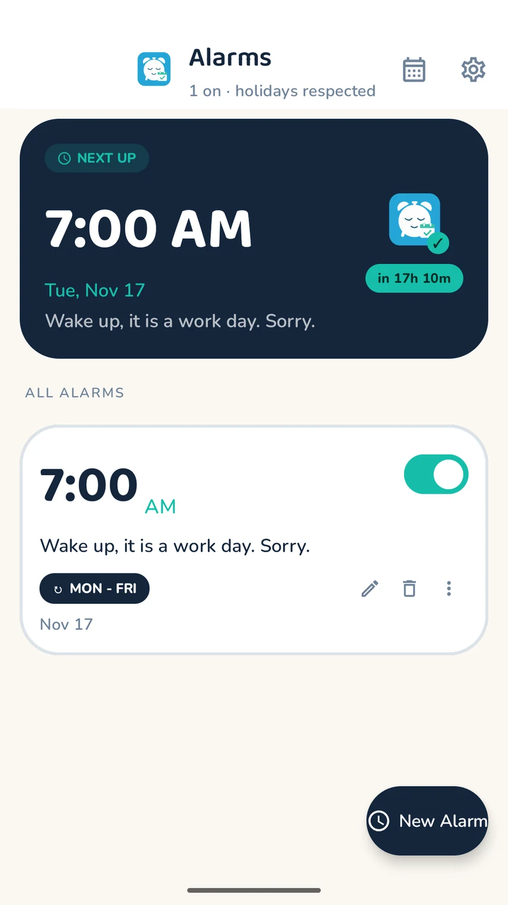

Schlauer aufwachen, nicht früher
Weekday Wake ist eine intelligente Wecker-App, die sich automatisch an deinen Arbeitszeitplan anpasst. Sie überspringt Wochenenden und Feiertage – du wachst nur auf, wenn du wirklich musst.
Herunterladen
Weekday Wake ist noch nicht erschienen. Beide Installationswege unten gehen mit der ersten Veröffentlichung online ‐ dieser Abschnitt verlinkt sie, sobald sie existieren.
Google Play
Vollständige Play-Version mit optionalem Trinkgeld-Kauf in der App. Zuerst startet die geschlossene Beta; diese Schaltfläche wird dann zum Store-Badge.
Kommt bald — erste VeröffentlichungDirekt-APK
Signierte Universal-APK über GitHub Releases (dieselbe App, mit Ko-fi- Spendenlink statt des Trinkgeld-Kaufs). Der SHA-256-Fingerabdruck wird mit der Veröffentlichung angegeben.
Kommt bald — erste VeröffentlichungTechnische Daten
Sprachen
English, Deutsch, Español (LatAm), Français, Português (Brasil), 中文 （简体）, 日本語 und mehr ‐ von der Community übersetzt und offen für Erweiterungen.
Mindestens Android
Android 12 oder neuer (API 31). Wecker werden mit
setAlarmClock() geplant, darum ist auf modernem Android
keine Opt-out-Berechtigung für exakte Wecker nötig.
Berechtigungen
USE_EXACT_ALARM‐ Wecker zur eingestellten Minute auslösenPOST_NOTIFICATIONS‐ Wecker- und Warn-Benachrichtigungen anzeigenFOREGROUND_SERVICE‐ den Zuverlässigkeits-Wachdienst am Leben halten (optionale Schicht)RECEIVE_BOOT_COMPLETED‐ Wecker nach einem Neustart neu anlegenWAKE_LOCK,VIBRATE‐ zur Weckzeit aufwecken und vibrierenINTERNET,ACCESS_NETWORK_STATE‐ nur für Feiertagskalender-Downloads
Keine Standort-Berechtigung. Niemals.
Datenschutz, überprüfbar
Der vollständige Nachweis ‐ exakte Berechtigungsliste, der eine ausgehende Feiertags-Netzwerkaufruf und was er sendet, die Data-safety-Angabe im Store ‐ ist Datenschutz-Seite dokumentiert. Wecker, Zeitpläne und Einstellungen verlassen dein Gerät nie.
Funktionen
Clevere Planung
Überspringt Wecker automatisch an Wochenenden und gesetzlichen Feiertagen der von dir gewählten Region.
Regionsbezogen
Passt sich den gesetzlichen Feiertagen und Arbeitstagen deines Landes und Bundeslandes an. Die App liest nie dein GPS.
Eigene Arbeitstage
Lege deinen eigenen Arbeitszeitplan fest. Ideal für Schichtdienste und unregelmäßige Wochen.
Eigene Feiertage
Füge persönliche Feiertage, Urlaubstage oder beliebige Tage hinzu, an denen du ausschlafen willst.
Mehrere Wecker
Lege für verschiedene Tage verschiedene Wecker mit eigener Bezeichnung und eigenem Weckton an.
Schöne Oberfläche
Aufgeräumte, moderne Oberfläche nach den Material-Design-Richtlinien.
App-Vorschau

Häufig gestellte Fragen
Gibt es Weekday Wake für iOS?
Zurzeit gibt es Weekday Wake ausschließlich für Android. Eine iOS-Version ist derzeit nicht geplant.
Funktioniert die App offline?
Ja! Sobald du Region und Arbeitszeitplan gewählt hast, funktioniert die App komplett offline. Die Feiertagsdaten werden lokal zwischengespeichert.
Woher kennt die App die Feiertage?
Weekday Wake nutzt öffentlich verfügbare Feiertagsdaten für jedes Land. Wenn du deine Region wählst, lädt die App den passenden Feiertagskalender herunter.
Kann ich Wecker zwischen Geräten synchronisieren?
Nein. Weekday Wake hat keine Konten und keine Cloud-Synchronisierung, und deine Wecker werden nirgendwo hochgeladen. Die Einrichtung geschieht pro Gerät: installiere die App auf jedem Gerät und wähle dort Arbeitszeitplan und Region.
Sind meine Daten privat?
Alle deine Wecker-Daten, die gewählte Region und die eigenen Einstellungen werden lokal auf deinem Gerät gespeichert. Auf der Datenschutz-Seite findest du den überprüfbaren Nachweis: exakte Berechtigungsliste, den einen ausgehenden Netzwerkaufruf und den Data-safety-Link.
Wie melde ich einen Fehler oder einen Funktionswunsch?
Bitte öffne ein Issue in unserem GitHub-Repository mit so vielen Details wie möglich: Gerätemodell, Android-Version und Schritte zur Reproduktion.